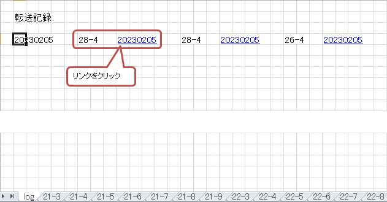

｢数独問題作成ツール｣ アップデート
このツールで作成した問題を記録するロジックを追加しました。
せっかく作ったデータですから、面白そうなデータは簡単に記録できるようにしたいと思いました。
このツールを初めてお使いになる方は、
suudoku_doc
をご一読下さい。レイアウトに若干の変更がありますが、
このツールの概要を理解して頂けると思います。
また、全体の流れを
suudoku_tutorial
にまとめましたので、流れに沿ってツールの動きを確認して下さい。
アップデートの概要は以下の通りです。
-
このツールのファイル名を｢z.suudoku_02.xlsm｣から｢z.suudoku_03.xlsm｣に更新しました。
z.suudoku_02.xlsmをお使いの場合は、今後必要なくなります。新しいz.suudoku_03.xlsmをお使い下さい。 -
- データ作成シート｢Make｣にデータを記録するか否か促すチェックボックスを追加しました。
-
予めオープンするマス目のパターンを指定するブロック2-2に
[13]から[16]のパターンを追加しました。
-
作成したデータを一時的に格納する｢Stock｣シートを新規追加しました。
-
作成したデータの中で残したいものを格納していくために、suudoku_dat.xlsm(以下suudoku_datと略記)を新規追加しました。
上記の概要について説明します
-
概要2のチェックボックスにチェックを入れなければ、アップデート前のツール｢z.suudoku_02.xlsm｣と全く同じ動きをします。
チェックを入れた場合は、作成されたデータが｢Stock｣シートにコピーされます。[※1]
[※1]
指定オープン数と記録されるデータの関係は以下のようになります。-
指定オープン数が23以上の場合
(オープン数 + 2) の問題作成に成功すると、作成したデータが記録されます。 -
指定オープン数が22以下の場合
指定オープン数に関わらず、オープン数26以下の問題作成に成功すると、データが記録されます。
各データのヘッダーには｢日付、○印、オープン数、繰返し回数、パターン｣がついています。
オープン数、繰返し回数、パターンについては suudoku_doc を参照。
日付 ：データ作成日
○印 ：4.のsuudoku_datにデータを転送するかどうかを決めるフラグ -
指定オープン数が23以上の場合
-
概要3の｢Stock｣シートで概要4のsuudoku_datにコピーしたいデータを選択します。
｢Stock｣シートに記録されたデータには、データ毎に○印がついています。
転送する必要がないと判断したデータは、ここで○印を消します。※2
後で。実際に解くことを考えて、オープンしているマス目のパターンがユニークな場合や、 loop数が少ないデータ以外は○印を消すことを強くお勧めします。 ｢Select｣ボタンを押すと○印のついたデータだけが残ります。※3
[※2] チップス：
[Tab]キーを押すと、各データの○印のセルがアクティブになり、押す毎に○印を移動します。 残す必要ないデータは[Del]キーで○印を削除していくと、簡単に必要なデータだけ残すことが出来ます。
(エクセルのイベント発生の関係で、[Tab]キーでうまく○印を移動しない場合は、マウスなどで○印のセルをカクティブにして削除して下さい(^^;)[※3]
｢Select｣ボタンを押す前に｢Translate｣ボタンを押すと、以下のワーニングが表示されます。
-
｢Translate｣ボタンを押すと、 suudoku_datに該当データが移動します。
｢Stock｣シートのデータでsuudoku_datに移動するのは、 以下の条件を満たすデータになります。
- オープン数: 21～32
｢Stock｣シートに記録されていたデータは、suudoku_datに移動したため、 シートのデータはクリアされます。
-
suudoku_datは以下のシートから構成されています。
-
｢log｣シート：データ毎に転送されたデータの日付、オープン数、繰返し回数、パターンが記録されています。

リンクが張られているので、クリックするとデータが格納されているシートの当該データに移動します。

データの日付にもリンクが張られています。クリックすると｢log｣シートのクリックした位置に戻ります。
-
｢21-3｣～[32-8]シート：
シート名はオープン数と繰返し数の組み合わせです。
転送されたデータが時系列で並びます。
-
-
ⅠからⅣの操作を繰り返すと、データが格納されているシートのデータ数が増えてきます。
各シートにはオープン数が同一で、難易度が同じと考えられるデータが記録されています。
｢Sort｣ボタンを押すとパターン(※)毎にデータを並び替え、オリジナルデータが表示されているブロックの下に表示されます。
(元々時系列で表示されているオリジナルデータは変更はありません)
※パターンは1.の右上に表示されている3x3の真ん中のブロックで、予めナンバーがオープンされるマス目のパターンです。
既知のバグについて
[Make]シートのデータが全て0の状態で、｢Congratulations!｣というメッセージボックが表示されることがあります。
[Make]シートが以下のような状態になってしまったときは、
suudoku_known_bug
をご覧下さい。